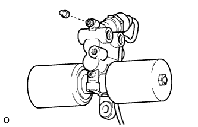
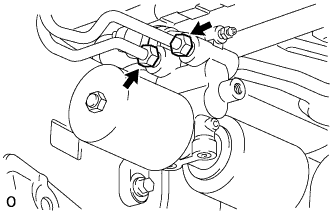
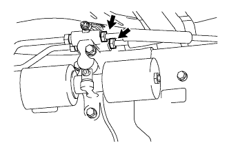
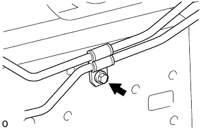
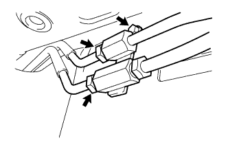
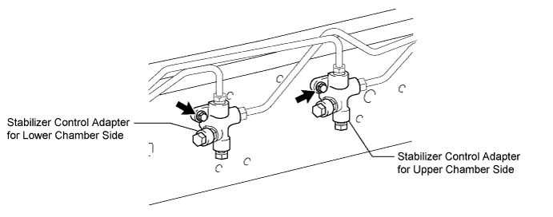
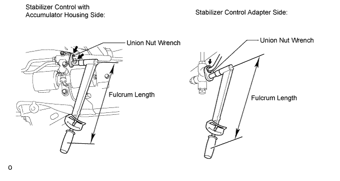
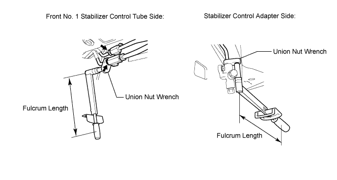
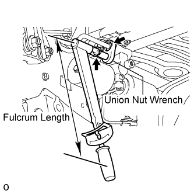

STABILIZER CONTROL VALVE (w/ KDSS) > INSTALLATION |
| 1. INSTALL STABILIZER CONTROL WITH ACCUMULATOR HOUSING ASSEMBLY |
 |
Install the stabilizer control with accumulator housing with the 2 bolts.
 |
Install the bleeder plug.
| 2. CONNECT REAR NO. 2 STABILIZER CONTROL TUBE ASSEMBLY |
 |
Connect the rear No. 2 stabilizer control tube to the stabilizer control with accumulator housing.
| 3. TEMPORARILY INSTALL REAR NO. 1 STABILIZER CONTROL TUBE ASSEMBLY |
 |
Temporarily install the rear No. 1 stabilizer control tube to the stabilizer control with accumulator housing.
 |
Install the bolt to the vehicle.
| 4. TEMPORARILY INSTALL FRONT NO. 2 STABILIZER CONTROL TUBE ASSEMBLY |
 |
Temporarily install the front No. 2 stabilizer control tube to the front No. 1 stabilizer control tube.
Install the bolt to the vehicle.
| 5. TEMPORARILY INSTALL FRONT NO. 2 AND REAR NO. 1 STABILIZER CONTROL TUBE ASSEMBLY |
Temporarily install the front No. 2 and rear No. 1 stabilizer control tube to the 2 stabilizer control adapters.

| 6. INSTALL STABILIZER CONTROL ADAPTER SUB-ASSEMBLY |

Install the 2 stabilizer control adapters to the vehicle with the 2 bolts.
| 7. TIGHTEN REAR NO. 1 STABILIZER CONTROL TUBE ASSEMBLY |

Using a union nut wrench, tighten the rear No. 1 stabilizer control tube.
| 8. TIGHTEN FRONT NO. 2 STABILIZER CONTROL TUBE ASSEMBLY |

Using a union nut wrench, tighten the front No. 2 stabilizer control tube.
| 9. TIGHTEN REAR NO. 2 STABILIZER CONTROL TUBE ASSEMBLY |
 |
Using a union nut wrench, tighten the rear No. 2 stabilizer control tube.
| 10. INSTALL CENTER EXHAUST PIPE ASSEMBLY |
for 2UZ-FE:
Install the center exhaust pipe (Click here).
for 1VD-FTV:
Install the center exhaust pipe (Click here).
| 11. INSTALL TAILPIPE ASSEMBLY |
for 2UZ-FE:
Install the tailpipe (Click here).
for 1VD-FTV:
Install the tailpipe (Click here).
| 12. BLEED AIR FROM SUSPENSION FLUID |
Bleed the air from the suspension fluid (Click here).
| 13. INSPECT FOR SUSPENSION FLUID LEAK |
Perform a driving test.
Check for fluid leakage from the parts and connections.

| 14. INSPECT FOR EXHAUST GAS LEAK |
| 15. MEASURE VEHICLE HEIGHT |
Set the tire pressure to the specified value(s) (Click here).
Bounce the vehicle to stabilize the suspension.
 |
Measure the distance from the ground to the top of the bumper and calculate the difference in the vehicle height between left and right. Perform this procedure for both the front and rear wheels.
| 16. CLOSE STABILIZER CONTROL WITH ACCUMULATOR HOUSING SHUTTER VALVE |
Using a 5 mm hexagon socket wrench, tighten the lower and upper chamber shutter valves of the stabilizer control with accumulator housing.
| 17. INSTALL STABILIZER CONTROL VALVE PROTECTOR |
 |
Install the valve protector with the 3 bolts.
Attach the clamp, and connect the connector to the valve protector.